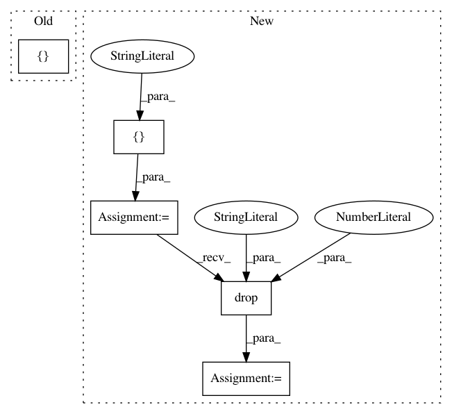

30703a7036f9bfd58ba23c2872887f1820ef928e,pudl/outputs.py,,fuel_ferc1_df,#Any#,94
Before Change
// Build a SELECT statement that gives us information from several different
// tables that are relevant to FERC Fuel.
fuel_ferc1_select = sa.sql.select([
pt["fuel_ferc1"].c.report_year,
pt["utilities_ferc"].c.respondent_id,
pt["utilities_ferc"].c.respondent_name,
pt["utilities_ferc"].c.util_id_pudl,
pt["plants_ferc"].c.plant_id_pudl,
pt["fuel_ferc1"].c.plant_name,
pt["fuel_ferc1"].c.fuel,
pt["fuel_ferc1"].c.fuel_qty_burned,
pt["fuel_ferc1"].c.fuel_avg_mmbtu_per_unit,
pt["fuel_ferc1"].c.fuel_cost_per_unit_burned,
pt["fuel_ferc1"].c.fuel_cost_per_unit_delivered,
pt["fuel_ferc1"].c.fuel_cost_per_mmbtu,
pt["fuel_ferc1"].c.fuel_cost_per_mwh,
pt["fuel_ferc1"].c.fuel_mmbtu_per_mwh]).\
where(sa.sql.and_(
pt["utilities_ferc"].c.respondent_id ==
pt["fuel_ferc1"].c.respondent_id,
After Change
pu_ferc = plants_utils_ferc_df(pudl_engine)
out_df = pd.merge(fuel_df, pu_ferc, on=["respondent_id", "plant_name"])
out_df = out_df.drop("id", axis=1)
out_df = out_df[[
"report_year",
"respondent_id",
In pattern: SUPERPATTERN
Frequency: 3
Non-data size: 5
Instances
Project Name: catalyst-cooperative/pudl
Commit Name: 30703a7036f9bfd58ba23c2872887f1820ef928e
Time: 2017-09-25
Author: zane.selvans@catalyst.coop
File Name: pudl/outputs.py
Class Name:
Method Name: fuel_ferc1_df
Project Name: nilmtk/nilmtk
Commit Name: 88392e816488749ffa872b8d64174b013a0b941a
Time: 2014-12-23
Author: nipunb@iiitd.ac.in
File Name: nilmtk/dataset_converters/combed/convert_combed.py
Class Name:
Method Name: convert_combed
Project Name: catalyst-cooperative/pudl
Commit Name: 6ddae2b8726783558d02b936ebbf84736252f063
Time: 2017-11-28
Author: zane.selvans@catalyst.coop
File Name: pudl/mcoe.py
Class Name:
Method Name: gens_with_bga